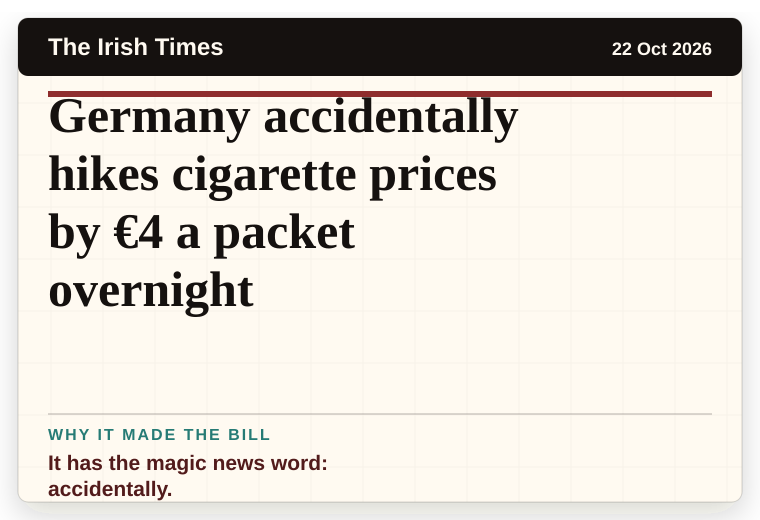
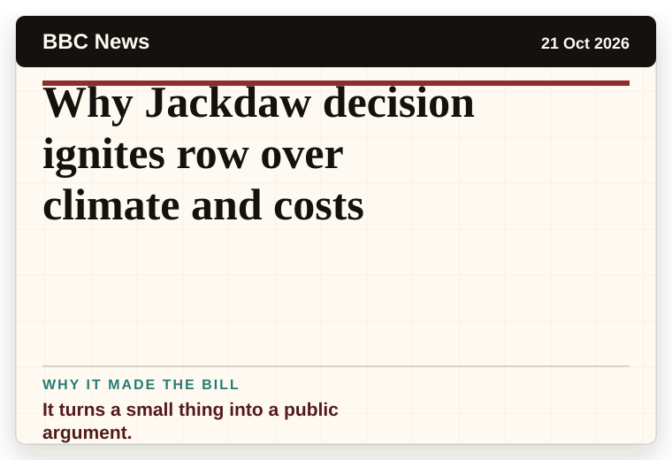
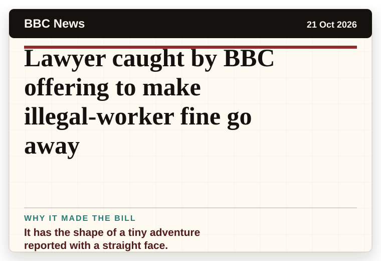
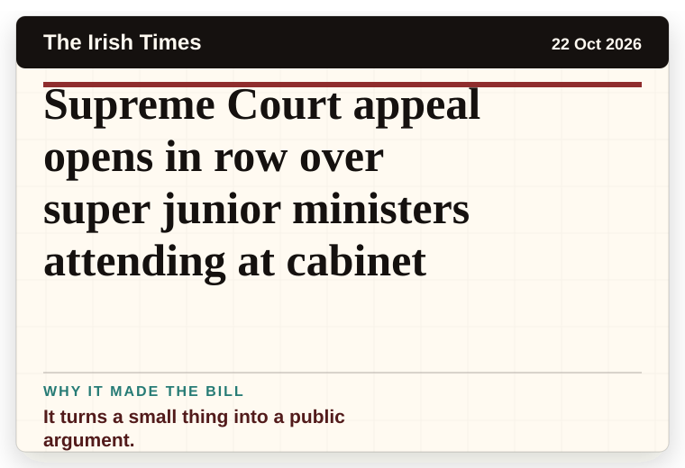
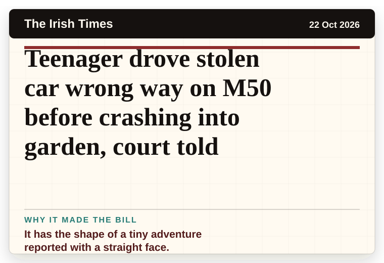
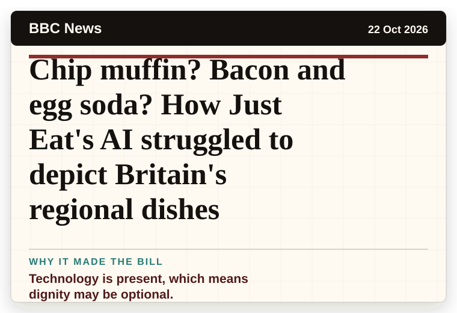

NT News
Australia
Roosters emerge as surprise favourites to land Storm star Stefano Utoikamanu
It has the shape of a tiny adventure reported with a straight face.
The latest daily picks, linked back to the original sources. Search the room, pick a source, or follow a headline out to the full story.
Record updated: 22 Oct 2026, 07:41 AM AEST
Showing 15 headline candidates from the refresh run completed on 22 Oct 2026, 07:41 AM AEST.
It has the shape of a tiny adventure reported with a straight face.

It reads like the setup to a very dry question.

The scale is doing deadpan comedy.

The headline is already trying not to laugh.

A wonderfully specific detail has taken centre stage.

A mystery is doing a lot of work in a very small sentence.

The word chaos gives it open-mic energy.

The scale is doing deadpan comedy.

It has the magic news word: accidentally.

It turns a small thing into a public argument.

It has the shape of a tiny adventure reported with a straight face.

It turns a small thing into a public argument.

It has the shape of a tiny adventure reported with a straight face.

It has that classic official-plan-meets-real-life shape.

Technology is present, which means dignity may be optional.